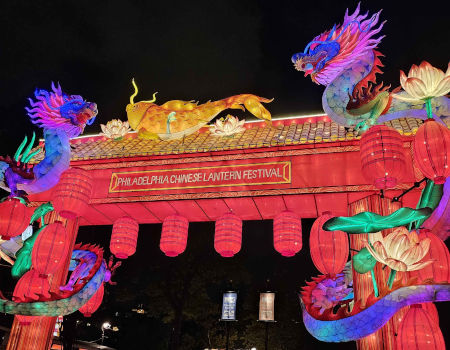
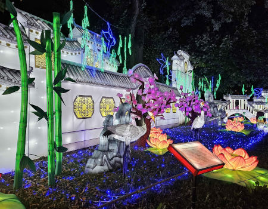
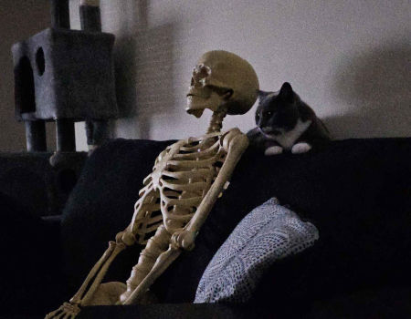
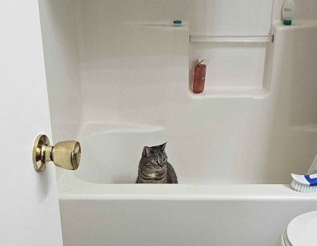

|  |  |
|  |  |
These are some of the Pictures I've taken this year. The first two are from when I went to the Chinese Lantern Festival in Philadelphia, Pennsylvania during my most recent visit with my brother. The third image is my cat Rosa (pictured on the right) with her new friend Mrs. Bones. The final image is a picture of my other cat, Milo, in the bath tub, because everytime I open my bathroom door he runs in and jumps straight into the tub.